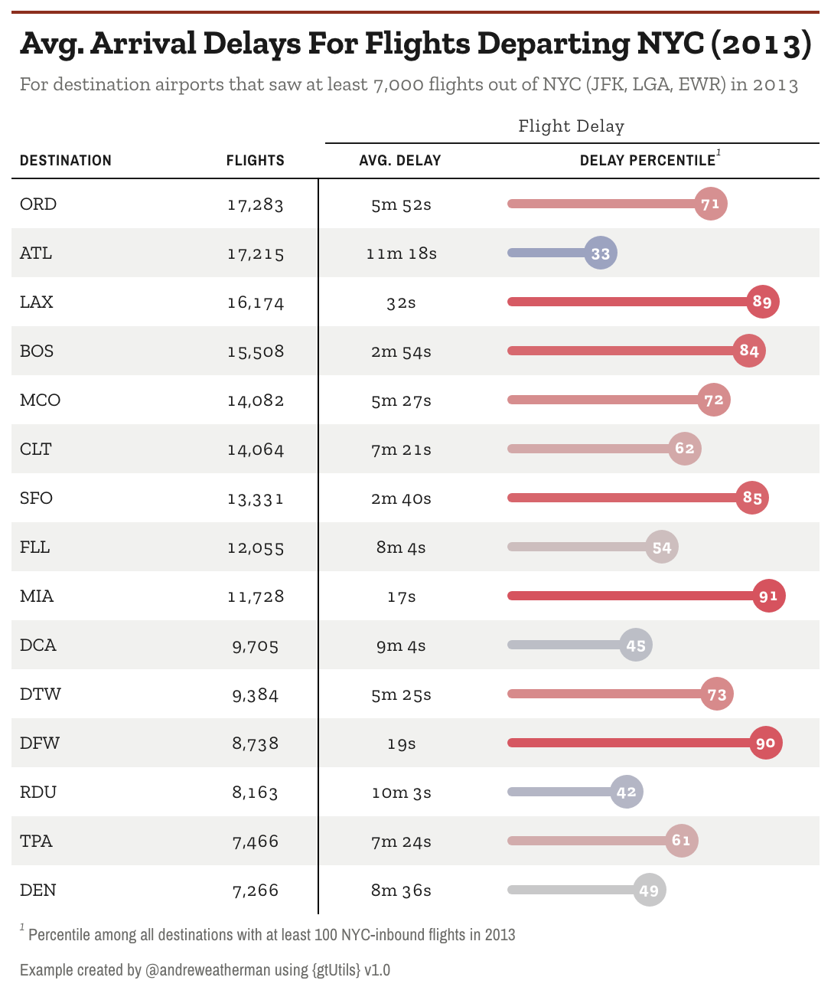
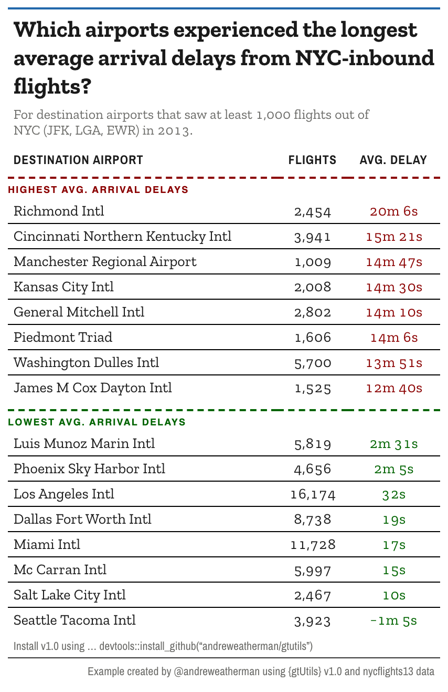

A table of numbers tells you the values. It does not tell you which
ones stand out, or where the line falls between a good group and a bad
one. Two v1.0 functions handle those jobs:
gt_percentile_bar() draws each value against the field it
belongs to, and gt_cutline() marks a break between rows.
This vignette builds one table with each, using flight data from nycflights13.
Percentile bars
We start with the 15 busiest destinations out of NYC and their average arrival delay. Alongside the raw delay we compute a percentile, so each destination can be read against every other qualifying airport, not just the 15 shown.
d1 <- nycflights13::flights %>%
filter(n() >= 150, .by = dest) %>%
summarize(
avg_delay = mean(arr_delay, na.rm = TRUE),
flights = n(),
.by = dest
) %>%
mutate(delay_ptile = cume_dist(-avg_delay)) %>%
slice_max(flights, n = 15) %>%
select(dest, flights, avg_delay, delay_ptile)cume_dist(-avg_delay) gives the percentile of each
destination’s delay, and the minus sign flips it so a low delay is a
high percentile (a good result). The value comes out on a 0-1 scale,
which matters in a moment.
Now the table. gt_percentile_bar() turns the percentile
column into a filled track with a numbered marker at the tip.
d1 %>%
arrange(desc(flights)) %>%
gt(id = "table") %>%
gt_theme_almanac() %>%
gt_percentile_bar(delay_ptile, full_track = FALSE) %>%
fmt_duration(avg_delay, input_units = "mins") %>%
fmt_number(flights, decimals = 0) %>%
tab_spanner(columns = contains("delay"), "Flight Delay") %>%
cols_align(columns = -dest, "center") %>%
gt_add_divider(flights, color = "black", weight = px(1.5), include_labels = FALSE) %>%
cols_label(
dest = "Destination",
delay_ptile = "Delay percentile",
avg_delay = "Avg. Delay"
) %>%
tab_footnote(
locations = cells_column_labels(delay_ptile),
footnote = "Percentile among all destinations with at least 100 NYC-inbound flights in 2013"
) %>%
tab_header(
"Avg. Arrival Delays For Flights Departing NYC (2013)",
"For destination airports that saw at least 7,000 flights out of NYC (JFK, LGA, EWR) in 2013"
) %>%
tab_source_note(
"Example created by @andreweatherman using {gtUtils} v1.0"
)
The delay_ptile column is stored on a 0-1 scale, but the
markers read 71, 33, 89, and so on. That is
gt_percentile_bar()’s scale argument, which
defaults to "auto": a column whose values all fall in
[0, 1] is treated as a proportion and mapped onto the 0-100
percentile axis, so a raw 0.71 prints as 71. A
column already on a 0-100 scale is left alone, so the same code works
either way. Set scale = "none" to turn that off.
The other arguments cover the look:
-
domain: the value range the bar spans,c(0, 100)by default. -
palette: colors mapped across the domain, used for both the fill and the marker. The default runs blue at the low end through grey to red at the high end. -
full_track: whether the unfilled track runs the full width or stops at the marker. We set it toFALSEhere so each bar ends at its own value. -
marker_size,track_height,text_color,decimals: the size of the marker, the thickness of the track, the color of the number inside the marker, and its decimal places. -
na_label: what to show for a missing percentile. It defaults to an em dash and draws a broken track, so an empty row cannot be misread as a percentile of zero.
The whole bar is CSS, not an image, so it stays sharp at any export size.
Cut lines
The second table asks a different question: of the destinations with real volume, which had the worst arrival delays and which had the best? We take the 8 highest and 8 lowest average delays and stack them in one sorted table.
airport_dict <- nycflights13::airports$name %>% set_names(nycflights13::airports$faa)
d2 <- nycflights13::flights %>%
filter(n() >= 1000, .by = dest) %>%
summarize(
avg_delay = mean(arr_delay, na.rm = TRUE),
flights = n(),
.by = dest
) %>%
arrange(desc(avg_delay)) %>%
slice(c(1:8, (n() - 7):n())) %>%
mutate(dest = airport_dict[dest],
dest = ifelse(is.na(dest), "Luis Munoz Marin Intl", dest)) %>%
select(dest, flights, avg_delay)arrange(desc(avg_delay)) puts the worst delays on top,
then slice(c(1:8, (n() - 7):n())) keeps the first 8 and
last 8, already sorted worst to best.
d2 %>%
gt(id = "table") %>%
gt_theme_almanac(accent = "#2168AB") %>%
gt_cutline(after = 0, "Highest Avg. Arrival Delays", color = "darkred") %>%
gt_cutline(after = 8, "Lowest Avg. Arrival Delays", color = "darkgreen", gap = c(12, 0)) %>%
opt_row_striping(FALSE) %>%
fmt_duration(avg_delay, input_units = "mins") %>%
fmt_number(flights, decimals = 0) %>%
tab_style(locations = cells_body(rows = 1:8, columns = avg_delay), style = cell_text(color = "darkred")) %>%
tab_style(locations = cells_body(rows = 9:nrow(d2), columns = avg_delay), style = cell_text(color = "darkgreen")) %>%
tab_style(locations = cells_body(), style = cell_text(size = px(14))) %>%
cols_label(
dest = "Destination Airport",
avg_delay = "Avg. Delay"
) %>%
cols_align(columns = -dest, "center") %>%
tab_options(
table_body.hlines.style = "solid",
table_body.hlines.color = "black",
table_body.hlines.width = px(1)
) %>%
opt_css(
"
#table .gt_col_heading { padding-bottom: 8px !important; font-size: 12px !important; }
"
) %>%
tab_header(
md("Which airports experienced the longest<br>average arrival delays from NYC-inbound<br>flights?"),
md("For destination airports that saw at least 1,000 flights out of<br>NYC (JFK, LGA, EWR) in 2013.")
) %>%
gt_538_caption(
md('Install v1.0 using ... devtools::install_github("andreweatherman/gtutils")'),
"Example created by @andreweatherman using {gtUtils} v1.0 and nycflights13 data"
)
There are two cut lines here, one for each group.
gt_cutline(after = 8, ...) draws the rule between rows 8
and 9, where the highest delays give way to the lowest. The label sits
on the line, rendered in uppercase.
The first call, gt_cutline(after = 0, ...), is the
useful trick. after = 0 draws a line above the very first
row, which lets you label the top section the same way you label the
break in the middle.
A few arguments shape the lines:
-
color,weight,style: the color, thickness, and line style ("dashed","solid", or"dotted"). -
label,label_position,label_size,label_color: the text on the line, whether it sits above or below, and how it looks. -
gap: extra space around the line, in pixels. A single number pads both sides; a length-2 vectorc(above, below)sets them separately. Heregap = c(12, 0)opens room above the “Lowest” line without pushing the row below it down.
The two tab_style() calls color the delay values to
match their group, red for the high block and green for the low, so the
split reads even without the labels. Note
cell_text(size = px(14)) on the body: the
gt_theme_* functions set their font sizes per cell, so a
tab_options(table.font.size = ...) will not move them.
Restyle the body cells directly instead, which is what that line
does.
Cut lines are positional, not data-driven.
gt::tab_row_group() splits a table on a value in the data
and adds heading rows; a cut line leaves the table flowing and marks a
fixed row number.